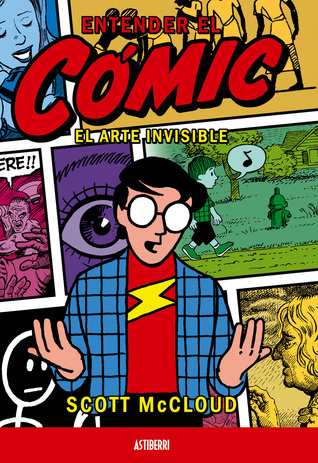

Welcome
Welcome to the world of Comics, Graphic Novels, and Manga! Komix4U contains information of each of these graphic forms, give suggested readers, and provide reference material to get your research started.
There is a debate over whether or not graphic novels/comics/manga are real books and "count as reading." Hopefully after reviewing this guide you will be able to see the benefits in how illustrated works can convey just as much meaning and emotion as text-only books.
Before you start here are a few pointers:
- Graphic Novels is the umbrella term generally used to encompass all these of the graphic styles in the Libguide
- Not all comics are about Superheroes and not all graphic novels follow the cartoon strip format
- Manga are illustrated works from Japan that are done in black and white, not to be confused with the Korean Manhwa which are done in full color (most similar to Western Graphic Novels)
- Some graphic novels start out as web comics and are eventually published as physical books that compile nonsequential strips, images, and stories in one book
Informational Books
"Understanding Comics" by Scott McCloud is a groundbreaking exploration of the art form itself. Through insightful analysis and engaging illustrations, McCloud delves into the essence of comics, uncovering their unique language and expressive power. This captivating journey unveils the intricate interplay of words and images, inviting readers to discover the depth and versatility of comics as a medium of storytelling and communication.